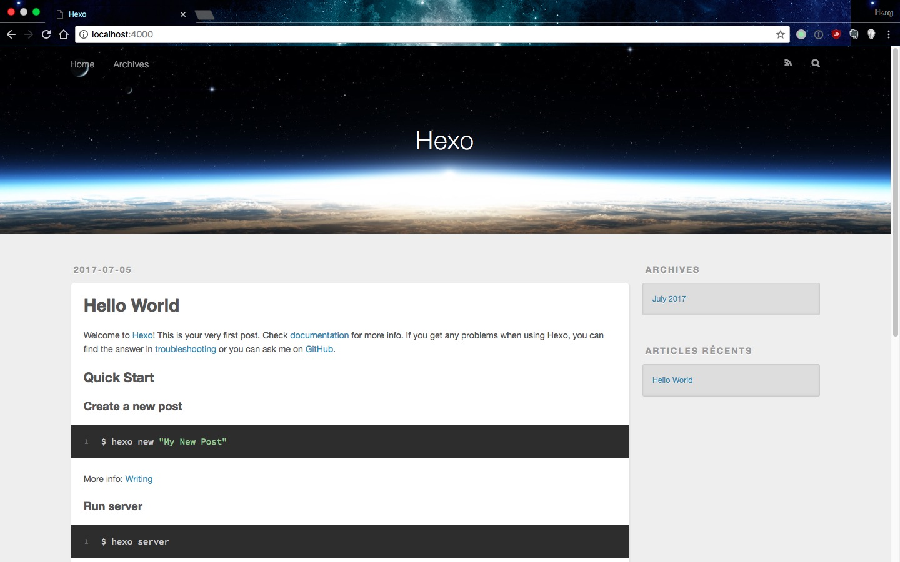
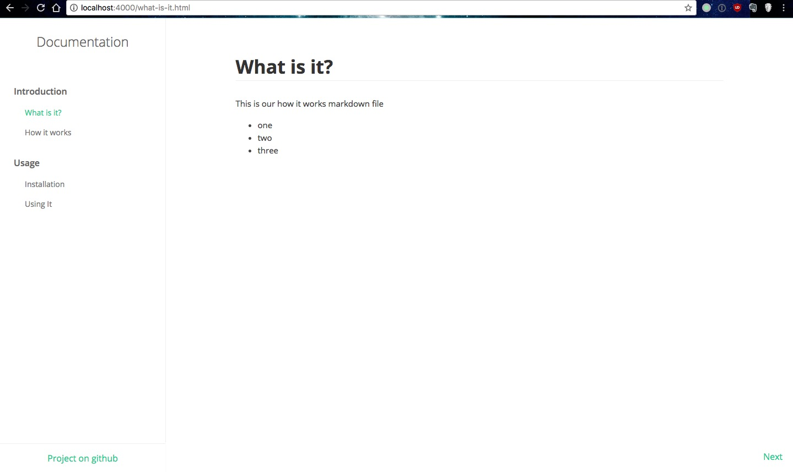

当我们发布一个开源项目的时候，最重要的事情之一就是要创建项目文档。对使用项目的用户来说，文档是非常有必要的，通常我们可以使用下面这些方式来创建文档：
- GitHub Wiki：在 Github 上我们可以为每个项目都创建一个 wiki。Wiki 是由一系列的 Markdown 文件组成，所以我们可以用 wiki 来做项目文档。但这种方案也有一些缺点：wiki 的贡献者不会出现在项目贡献者列表中；文档的结构和布局都是有限制的，只能是 Github Wikis 的样式；文档存储在第三方平台上。
- README：我们可以为项目创建一个 README.md 文件，它会直接展示在 Github（或 Gitlab、Coding 等 git 仓库）的项目页面。如果文档非常少，这中方案是非常适合的。但如果文档非常多，这个 README.md 文件就会非常大了。而且通常来说，README.md 是用来介绍项目，而不是展示文档。
- 自建网站：当然，我们也可以创建一个文档网站，然后放在自己的服务器上。这样我们就可以随意编辑文档。但这种方案的缺点是不便于追踪文档的变化、开发网站和文档维护相比前两种方案麻烦非常多、而且还需要自建主机。
- Github Pages：Github 也提供了一个托管项目中静态文件的功能。我们可以为项目创建一个
gh-pages分支，Github 就会将分支中的内容当做静态站点。这种方案好的一方面是文档维护是在一个单独的分支，虽然可能寻找起来比较麻烦。不好的一方面是文档编写是编写成静态文件（html/css/js），修改和维护起来比较麻烦。
以上方案都不完美，所以需要一种综合以上所有优点的方案，简单来说就是：
- 文档以 MarkDown 文件编写
- 使用 hexo 将 MarkDown 文件生成成静态文件
- 将静态文件发布到 github pages
Hexo 简介 🔗
Hexo 是一个 Node.js 编写的静态网站生成器。Hexo 主要用来做博客框架，同时 Hexo 也整合了将静态网站部署到 Github 的功能，所以也很适合用来做 Github 项目的文档。
我们可以使用 Hexo，根据写好的 HTML 布局（既 Hexo 的主题），将 MarkDown 文件生成成主题对应的静态 html/css/js 文件。Hexo 提供了将静态文件部署到 Github 分支上的配置。也就是说，我们可以使用 MarkDown 来维护文档，当写好部署配置之后，使用一个命令就可以将文档生成并发布到 Github 的 gh-pages 分支上。
安装 Hexo 🔗
Hexo 是通过 Node.js 编译的，所以需要安装 Node.js。Hexo 使用 Git 将文件部署到 Github，所以也需要安装 Git。
安装 Node.js 🔗
推荐使用 Node.js 的版本管理器来安装，比如 nvm。当然，也有很多其他的 Node.js 版本管理工具，使用这些工具，我们能很方便地安装 Node.js，以及在不同的 Node.js 的版本中切换。
目前 Node.js 最新的版本是 8.1.3，使用 nvm 来安装：
$ nvm install v8.1.3
安装完 Node.js 的同时也会安装对应的 npm。
安装 Git 🔗
我们还需要在系统上安装 Git。如果不确定系统中是否已经安装了 Git，使用下面的命令检查：
$ git --version
如果出现了 Git 的版本号，则不需要再安装了。如果没有，则需要安装 Git。
Windows 🔗
Windows 系统直接点此连接 https://git-scm.com/download/win 下载 Git 软件，然后运行即可。
macOS 🔗
在 macOS 上安装 Git 有多种不同的方式：
- Git installer
- Homebrew：运行
brew install git - MacPorts：运行
sudo port install git +doc +bash_completion +gitweb
我个人推荐使用 Homebrew 来安装软件。当然如果你更喜欢 MacPorts，也没有任何问题。
Linux – Ubuntu or Debian 🔗
在 Ubuntu 或 Debian 上，我们可以使用 apt 来安装软件：
$ sudo apt-get install git-core
Linux – Fedora, Red Hat or CentOS 🔗
在 Fedora、Red Hat 或 CentOS 上，我们可以使用 yum 来安装软件：
$ sudo yum install git-core
安装 Hexo CLI 🔗
在安装完 Node.js 和 Git 之后，我们最后需要安装 Hexo：
$ npm install -g hexo-cli
通过下面的命令来检查 hexo 是否正确安装上了：
$ hexo --version
如果输出了一系列的版本号，说明所有安装工作都以完成，可以正式使用 hexo 了。
配置 🔗
安装好 hexo 之后，现在我们就可以在 Github 的主分支上来创建我们的文档了。根据该文章，你可以：
- 在一个已存在的项目中创建文档
- 创建一个新的项目 Create a new repository
简单起见，假设你是新创建了一个名为 hexo-documentation 的项目，当然你也可以用一个已经存在的项目继续下面的操作。
接下来使用下面的名令在本地 clone 项目：
$ git clone https://github.com/USERNAME/REPOSITORY.git
将 USERNAME 替换为你的用户名，REPOSITORY 替换为你的项目名称。例如我执行的命令如下：
$ git clone https://github.com/nodejh/hexo-documentation
然后使用 cd 进入项目目录，并创建一个名为 docs 的目录：
$ cd hexo-documentation
$ mkdir docs
docs 目录将存放我们的文档。使用 hexo 初始化 docs 目录：
$ hexo init docs
上面的命令将生成 hexo 的一些配置并安装相关依赖。安装完成之后，docs 的目录结构如下：
_config.yml站点配置文件package.jsonNode.js 的依赖文化scaffoldshexo 发布文章的时候使用（本文暂不介绍 hexo 的特性）sourceMarkDown 和各种资源文件themeshexo 的主题
我们可以通过下面的命令来检查网站是否能够正常运行：
$ hexo generate
$ hexo server
第一个命令将根据选用的主题，将 sources 目录中的文件转换成静态网站文件。第二个命令将启动一个 Web 服务器，提供这些静态网站文件，我们可以通过 http://localhost:4000 来访问：

目前我们的网站看起来还是一个博客而不是文档，不过我们将要将其改成文档的样子。
创建一个主题 🔗
要改变网站的外观，我们需要创建一个 hexo 的主题。主题确定了 hexo 生成的网站的样式和布局。https://hexo.io/themes/ 这个网站有很多免费的 hexo 主题可以使用。但在这篇文章里，我们要从零开始创建一个 hexo 主题。
Hexo 有一个名为 landscape 的默认主题，在 docs/themes 这个目录里面。你可以在 themes 目录存放多个主题，但每次只能有一个主题被使用。接下来让我们创建自己的主题。在 themes 目录下创建一个名为 documentation 的目录。
Hexo 的主题包含以下文件和目录：
_config.yml主题配置文件languages国际化的语言包layout主题布局，即页面结构等scripts一些 Hexo 插件脚本source资源文件夹，里面的文件名以_开头外的所有文件都会被当作网站的静态资源
我们将创建一个简单的静态主题，所以我们不需要 scripts 目录。然后目前仅以中文展示，所以也不需要 languages 目录。
我们需要做的就是编写网站的布局，以及一些 CSS 代码。在本文中我将使Sass 来生成 CSS，但 hexo 并不能直接处理 Sass，但幸运的是有 hexo-renderer-sass 这个插件来帮助 hexo 处理 Sass。
使用 npm 来安装 hexo-renderer-sass，在 ./docs（注意不是在 themes 目录里面）运行下面的命令：
$ npm install --save hexo-renderer-sass
然后回到 themes 目录里面，配置 Sass，不然 hexo-renderer-sass 插件不会被加载。在 docs/themes/documentation/_config.yml 文件中加入下面的代码：
node_sass:
outputStyle: nested
precision: 4
sourceComments: false
Sass 的所有可配置在 node-sass
接下来就可以编写 Sass 代码了。不过在本文中我不会详细介绍怎么写 Sass 样式，因为它和本文内容无关，而且范围太大，一时半会儿写不完。你可以在这里 https://github.com/nodejh/hexo-documentation 找到这些文件，然后把他们复制到你的项目中，或者你也可以创建自己的样式。
让我们继续回到布局，开始编写代码之前，还有一个重要的事情就是选择模板引擎，如 swig、ejs 等。Hexo 默认使用的模版引擎是 swig，这也是我们将要使用的。
接下来创建文件 docs/themes/documentation/layout/post.swig，并写入下面的代码：
<!DOCTYPE html>
<html>
<head>
<meta charSet='utf-8' />
<title>{{config.title + ' - ' + page.title}}</title>
<link href='https://cdnjs.cloudflare.com/ajax/libs/normalize/4.0.0/normalize.min.css' rel='stylesheet' type='text/css'>
<link href='https://fonts.googleapis.com/css?family=Open+Sans:400,600,300,700' rel='stylesheet' type='text/css'>
<link href='{{ url_for("css/docs.css") }}' rel='stylesheet'>
</head>
<body>
<div class='menu'>
<div class='logo'>
Documentation
</div>
<nav class='menu-nav'>
{% for section in site.data.nav %}
<ul class='nav'>
<span>{{ section.title }}</span>
<ul class='nav'>
{% for item in section.items %}
<li>
<a href='{{item.href || url_for(item.id + ".html") }}'{% if item.id == page.id %} class='active'{% endif %}>{{item.title}}</a>
</li>
{% endfor %}
</ul>
</ul>
{% endfor %}
</nav>
<a class='footer' href='https://github.com/sitepoint-editors/hexo-documentation'>
Project on github
</a>
</div>
<div class='page'>
<div class='page-content'>
<h1>{{page.title}}</h1>
{{page.content}}
</div>
</div>
<div class='switch-page'>
{% if page.prev %}
<a class='previous' href='{{ url_for(page.prev) }}'>Previous</a>
{% endif %}
{% if page.next %}
<a class='next' href='{{ url_for(page.next) }}'>Next</a>
{% endif %}
</div>
</body>
</html>
简单分析一下代码。
<head>
<meta charSet='utf-8' />
<title>{{config.title + ' - ' + page.title}}</title>
<link href='https://cdnjs.cloudflare.com/ajax/libs/normalize/4.0.0/normalize.min.css' rel='stylesheet' type='text/css'>
<link href='https://fonts.googleapis.com/css?family=Open+Sans:400,600,300,700' rel='stylesheet' type='text/css'>
<link href='{{ url_for("css/docs.css") }}' rel='stylesheet'>
</head>
头部主要包括两部分：
titleHexo 提供了一些列的变量，我们可以使用其中的config.title和page.title来组成我们的 titlelinks链接里面包括 normalize CSS，使默认的样式保持跨浏览器的一致性；Google Fonts，使文本显示更友好；url_for，这是 Hexo 的一个辅助函数，可以在路径前加上根路径
接下来看 body 部分，大体上还是 HTML。一些重点部分稍后会详细介绍。
<nav class='menu-nav'>
{% for section in site.data.nav %}
<ul class='nav'>
<span>{{ section.title }}</span>
<ul class='nav'>
{% for item in section.items %}
<li>
<a
href='{{ item.href || url_for(item.id + ".html") }}'
{% if item.id == page.id %}
class='active'
{% endif %}
>
{{ item.title }}
</a>
</li>
{% endfor %}
</ul>
</ul>
{% endfor %}
</nav>
上面的代码会生成网站的菜单部分，菜单项来自于 site.data.nav 这个对象，稍后我们会在 docs/source/_data/nav.yml 中创建。source/_data 是 Hexo 的数据文件。site.data.nav 即 _data 目录中的 nav.yml 文件。nav.yml 中是一个包含 title 和 items 对象的数组。
接下来比较重要的是文章内容这部分：
<div class="page-content">
<h1>{{ page.title }}</h1>
{{ page.content }}
</div>
这里面包括了文章标题和内容两部分。文章内容是根据 MarkDown 文件生成的 HTML。
最后还包括 “上一页” 和 “下一页” 按钮：
{% if page.prev %}
<a class='previous' href="{{ url_for(page.prev) }}">上一页</a>
{% endif %}
{% if page.next %}
<a class='next' href="{{ url_for(page.next) }}">下一页</a>
{% endif %}
上面的代码中，我们假设每个页面都有 “上一页” 和 “下一页” 按钮。
然后创建一个首页 documentation/layout/index.swig：
<!DOCTYPE html>
<html>
<head>
<meta charSet='utf-8' />
<title>{{config.title + ' - ' + page.title}}</title>
<link href='https://cdnjs.cloudflare.com/ajax/libs/normalize/4.0.0/normalize.min.css' rel='stylesheet' type='text/css'>
<link href='https://fonts.googleapis.com/css?family=Open+Sans:400,600,300,700' rel='stylesheet' type='text/css'>
<link href='{{ url_for("css/docs.css") }}' rel='stylesheet'>
</head>
<body>
<div class='index'>
<a href="/what-is-it.html">
Get Start
</a>
</div>
</body>
</html>
现在差不多就完成了！不仅是布局文件完成了，我们的主题也制作好了。最后一件事情就是修改 Hexo 生成静态文件的时候使用的主题。修改 docs/_config.yml 文件中的 theme 属性：
theme: documentation
所有事情都做完了！接下来我们就可以创建文档了。
编写文档 🔗
接下来就到了整篇文章最重要的部分了，为我们的项目编写文档。我们将在 docs/source/ 目录完成这些事情。这里的文档是网站内容的来源，以及网站的菜单。
首先创建菜单。Hexo 提供了让我们定义一些数据文件，并通过 site.data 来访问。首先在 source 目录里面创建 _data 目录，然后创建名为 nav.yml 的文件：
- title: Introduction
items:
- id: what-is-it
title: What is it?
- id: how-it-works
title: How it works
- title: Usage
items:
- id: installation
title: Installation
- id: using
title: Using It
这样我们就可以通过 site.data.nav 来访问 nav.yml 中的文件。
在上面创建的菜单中，我们创建了两篇文章，每篇文章有两个部分。最后我们就只需要创建页面了。在编写 MarkDown 之前，先创建以下文件，与菜单对应：
- what-is-it.md
- how-it-works.md
- installation.md
- using.md
接下来就要往文件中写入内容。文件的开头部分是 Front-matter，里面是页面的一些设置，Front-matter 是包含在两个 --- 之间的 YAML 格式的。
如 what-is-it.md 所示：
---
layout: default
id: what-is-it
title: What is it?
next: how-it-works.html
---
This is our what it is markdown file
- one
- two
- three
在 front-matter 中有下面这些设置：
layout页面的布局id页面的唯一标识title页面标题next下一页链接
按照类似的方法编写其他几个 MarkDown 文件。当网站创建好之后，这些 MarkDown 内容会被转换为 HTML。
编辑好了之后，就可以生成静态网站了：
$ hexo generate
$ hexo server
然后通过 http://localhost:4000 就可以看到如下页面：

部署到 GitHub Pages 🔗
现在我们的文档网站就全部做好了，接下来需要做的就是将其部署到 Github Pages 上。如果我们手动来实现，就需要创建 gh-pages 分支，生成静态网站，复制网站文件到 gp-pages 分支，commit 并且 push 代码到 GitHub。当修改文档之后，又得重复这些工作。
幸运的是，Hexo 提供了一个很方便地将站点部署到 gh-pages 的方法。首先安装 hexo-deployer-git 这个包，在 docs/ 目录下运行命令：
$ npm install --save hexo-deployer-git
然后打开 docs/_config.yml，在文档的最后面，修改部署配置信息，注意将其中的用户名（nodejh）修改为你的用户名：
deploy:
type: git
repo: https://github.com/nodejh/hexo-documentation
branch: gh-pages
message: "Docs updated: {{ now('YYYY-MM-DD HH:mm:ss') }})"
最后再修改一些其他配置：
# Site
title: Hexo documentation
subtitle: Hexo documentation article
description: Hexo documentation article
author: nodejh
language: zh-cn
timezone: GMT
# URL
url: https://nodejh.github.io/hexo-documentation
root: /hexo-documentation/
OK！现在就只剩下一件事情了，就是将网站部署到 Github 上，在终端上运行：
$ hexo generate
$ hexo deploy
Hexo 将生成静态文件，并将其自动部署到 gh-pages 分支上。部署完成之后，我们就可以通过 https://nodejh.github.io/hexo-documentation 来访问了。
总结 🔗
如果你想要的项目被被人使用，文档是非常必要的。在 GitHub 上也有很多创建项目文档的方法。对于中大型项目来说，维护一个文档网站也是很有必要的。Hexo 不仅能生成静态网站，同时也提供了部署网站的方案，非常方便我们使用。